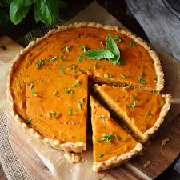

Tarta de espinaca
🕓 45 min de preparación
👥 6-8 porciones
Dificultad Media

Ingredientes
- 1 masa para tarta (casera o comprada)
- 500g de espinaca fresca
- 200g de queso cremoso
- 150g de queso mozzarella rallado
- 3 huevos
- 1 cebolla mediana
- 2 dientes de ajo
- 200ml de crema de leche
- Sal y pimienta a gusto
- Nuez moscada (opcional)
- 2 cucharadas de aceite de oliva
Información nutricional
16
Calorías
Calorías
16
Carbohidratos
Carbohidratos
16
Proteínas
Proteínas
16
Grasas
Grasas
Preparación
- Precalentar el horno a 180°C y colocar la masa en un molde.
- Lavar y escurrir bien las espinacas. Picar groseramente.
- Sofreír cebolla y ajo en aceite de oliva.
- Agregar espinaca al sartén, condimentar.
- Mezclar huevos, crema, queso y unir con espinaca.
- Verter sobre la masa y espolvorear mozzarella.
- Hornear 30-35 min.
💡 Consejos Útiles
✓
Usar espinaca congelada si no hay fresca.✓
Agregar parmesano arriba para gratinar.✓
Puedes reemplazar crema por leche evaporada.✓
Ideal para freezar en porciones.Recetas Relacionadas

Tarta de calabaza
⏱ 45 min
Media
Tarta de calabaza
⏱ 45 min
Media
Tarta de calabaza
⏱ 45 min
Media